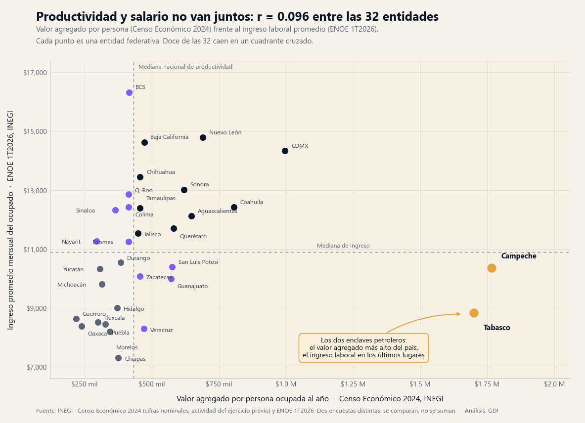
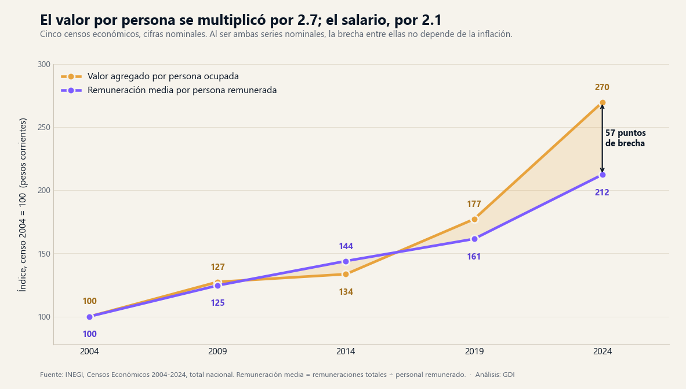

La pregunta con la que arrancó este análisis fue abierta: ¿existe realmente una relación entre lo que produce la economía de una entidad y lo que ganan sus trabajadores? Tomamos las 32 entidades completas —sin preseleccionar regiones— ordenadas por su valor agregado censal bruto por persona ocupada del Censo Económico 2024, y enfrente el retrato laboral más reciente: el ingreso promedio del ocupado y la tasa de informalidad de la ENOE del primer trimestre de 2026. La respuesta incomoda al modo habitual de diagnosticar el desarrollo regional.
La relación que no existe

El Censo Económico 2024 registra 5,468,180 unidades económicas, 27,965,433 personas ocupadas y $15.67 billones de pesos de valor agregado censal bruto: $560,263 por persona al año en el promedio nacional. Al contrastar esa métrica con el ingreso laboral de la ENOE, la correlación entre las 32 entidades es de 0.096 — prácticamente ninguna. Doce entidades caen en un cuadrante cruzado (productividad sobre la mediana con ingreso por debajo, o al revés) y el salto promedio de posición entre un ranking y el otro es de 7.6 lugares.
Fuente: INEGI, Censo Económico 2024 (cifras nominales) y ENOE 1T2026. Cálculo propio sobre el universo completo de 32 entidades.
Quince empresas explican el primer lugar del país
El desacople tiene un origen identificable en los propios datos. Campeche encabeza el país con $1,765,839 de valor agregado por persona ocupada y Tabasco le sigue con $1,699,293 — más del triple del promedio nacional. Sin embargo, Campeche ocupa el lugar 19 en ingreso laboral ($10,366 mensuales) y Tabasco el 25 ($8,835), con tasas de informalidad de 60.3% y 66.2% respectivamente.
El detalle sectorial del censo lo resuelve: en Campeche, 15 unidades económicas del sector minería (SCIAN 21) generan el 84.6% del valor agregado del estado con 11,967 personas — el 6.2% de su personal ocupado. En Tabasco son 61 unidades del mismo sector: 80.7% del valor agregado con 23,766 personas, el 6.7% del personal. La minería es la actividad de mayor valor por persona del país ($6,609,653 anuales a nivel nacional). Es una economía de enclave: produce una cifra enorme y la reparte entre poquísimos puestos de trabajo.
del valor agregado de Campeche lo generan 15 unidades económicas de minería, que ocupan al 6.2% del personal del estado. Campeche es primer lugar nacional en productividad y lugar 19 en ingreso laboral.
Retirando esos dos enclaves la relación aparece, pero débil: la correlación sube a 0.535, que explica menos de un tercio de la variación. La productividad promedio de un territorio no dice, por sí sola, cuánto gana su gente.
Lo que sí predice el ingreso: la estructura del empleo
La variable que sí funciona está en la misma base. La correlación entre informalidad e ingreso promedio del ocupado es de −0.907: casi una línea recta. Oaxaca, con la informalidad más alta del país (79.9%), tiene un ingreso de $8,386; Coahuila, con la más baja (34.2%), llega a $12,425; Chiapas cierra la tabla con $7,309 y 75.3% de informalidad.
Ese dato del censo merece leerse solo, porque no depende de ningún cruce: en Oaxaca el 53.4% del personal ocupado en los establecimientos censados no recibe pago alguno; en Guerrero el 53.0%; en Tlaxcala 44.8% y en Chiapas 44.7%. En Nuevo León es 9.0%. A nivel nacional son 6,551,999 personas —el 23.4% del personal ocupado— trabajando sin remuneración dentro de un establecimiento censado. No es ambulantaje: es el negocio familiar donde trabajan tres y cobra uno.
| Entidad | Valor agregado por persona (2024) | Lugar | Ingreso mensual del ocupado (1T2026) | Lugar | Informalidad | Personal sin pago (CE) |
|---|---|---|---|---|---|---|
| Campeche | $1,765,839 | 1 | $10,366 | 19 | 60.3% | 26.9% |
| Tabasco | $1,699,293 | 2 | $8,835 | 25 | 66.2% | 28.6% |
| Ciudad de México | $996,344 | 3 | $14,336 | 4 | 44.2% | 12.7% |
| Nuevo León | $690,053 | 5 | $14,786 | 2 | 34.9% | 9.0% |
| Guanajuato | $572,330 | 10 | $9,987 | 22 | 54.8% | 22.2% |
| Veracruz | $471,004 | 12 | $8,293 | 30 | 68.9% | 35.7% |
| Baja California Sur | $415,042 | 17 | $16,327 | 1 | 38.9% | 16.1% |
| Oaxaca | $238,014 | 31 | $8,386 | 29 | 79.9% | 53.4% |
| Guerrero | $217,719 | 32 | $8,625 | 26 | 76.4% | 53.0% |
Valor agregado censal bruto por persona ocupada, Censo Económico 2024 (nominal). Ingreso promedio mensual del ocupado y tasa de informalidad, ENOE 1T2026. Personal sin pago = personal no remunerado sobre personal ocupado total, Censo Económico 2024. Nacional: $560,263 · 54.78% de informalidad · 23.4% sin pago. Fuente: INEGI.
Veinte años de censos: el valor creció al doble de velocidad que el salario

La foto se explica mejor con la película. Entre los censos de 2004 y 2024, el valor agregado por persona ocupada se multiplicó por 2.70 y la remuneración media por persona remunerada por 2.12. Ambas series están en pesos corrientes, de modo que la distancia entre ellas no depende de la inflación. En la proporción que importa: las remuneraciones pagadas equivalían al 24.8% del valor agregado en 2004, al 23.3% en 2014 y al 22.2% en 2024, y esa participación bajó en 27 de las 32 entidades entre los dos últimos censos.
Dos casos marcan el rango. Aguascalientes tuvo el mayor salto de productividad del país entre 2014 y 2024 (+257.0%) y, a la vez, la mayor caída en participación laboral: de 33.6% a 18.7% del valor agregado, 14.9 puntos menos. Y en Tabasco, entre 2019 y 2024, el valor agregado del estado creció 147.1% mientras las remuneraciones pagadas subieron 1.8%. Crecer en valor y mejorar el empleo son cosas distintas, y los censos lo registran entidad por entidad.
El contraste con las carencias
La medición de pobreza 2024 del CONEVAL ordena la carencia por acceso a la seguridad social casi igual que la informalidad de la ENOE: Chiapas 76.4%, Oaxaca 73.9% y Guerrero 72.6% en el extremo alto; Coahuila 23.4% y Nuevo León 24.7% en el bajo. Las dos entidades más productivas del país no escapan: Tabasco registra 54.8% de carencia por acceso a la seguridad social y 34.8% de pobreza; Campeche, 51.2% y 36.7%. Producir mucho por persona no protegió a su población.
Implicaciones para la gestión pública
1. La productividad no es, por sí sola, un indicador de resultado
Es común que un programa estatal de desarrollo económico se evalúe por el valor agregado que logra atraer. Los datos muestran que esa métrica puede subir sin que el ingreso de la población se mueva: Campeche y Tabasco son la demostración extrema, Aguascalientes la versión matizada. Un tablero estatal necesita, junto al valor generado, al menos un indicador de reparto: participación de las remuneraciones, personal no remunerado o informalidad. Las tres se publican por entidad.
2. El diagnóstico del ingreso bajo no es "poca productividad"
Con −0.907 entre informalidad e ingreso, y 0.953 entre informalidad y personal sin pago, el cuello de botella salarial en Oaxaca, Guerrero, Chiapas o Hidalgo no se resuelve solo elevando el valor agregado del territorio: se resuelve cambiando la estructura de las unidades donde la gente trabaja. Es un diagnóstico que lleva a otros instrumentos —formalización, seguridad social, tamaño de unidad económica— y que debería quedar explícito en un plan municipal o estatal de desarrollo.
3. Dos cautelas al usar estas cifras en un informe
Primera: el Censo Económico contabiliza puestos en establecimientos y la ENOE personas ocupadas en hogares —los 27.97 millones del censo equivalen al 47.0% de los 59.55 millones de la ENOE—, de modo que son universos que se comparan, no que se suman ni se dividen entre sí. Segunda: todos los montos censales son nominales. Presentar el crecimiento del valor agregado 2019-2024 como logro real, sin señalarlo, sobreestima el resultado; por eso aquí el argumento se apoya en proporciones y en la distancia entre dos series igualmente nominales.
Este hallazgo se conecta con dos análisis previos: el mapa de la informalidad que ningún trimestre mueve ubicó a los 32.6 millones sin seguridad social, y la retirada silenciosa de la empresa grande del sur mostró por qué. El eslabón que faltaba es este: el valor que genera un territorio y el ingreso que recibe su gente son dos hechos separados, unidos por el tipo de unidad económica donde se trabaja.
Conclusión
El ranking de productividad estatal lo encabezan dos entidades donde el trabajador promedio gana menos que la mediana nacional. No es una paradoja estadística: es una economía de enclave, donde 15 empresas generan el 85% del valor de un estado y el resto de la población trabaja en otra economía, informal y sin pago. En el agregado del país la lógica se repite más suave: veinte años de censos con el valor por persona multiplicado por 2.70, el salario por 2.12 y la porción que llega a las remuneraciones cayendo en 27 de 32 entidades. La conclusión operativa es exigente: atraer valor y generar ingreso son dos objetivos distintos, se miden distinto y hay que perseguirlos por separado.
¿Qué dicen estos indicadores de tu territorio?
En la plataforma de GDI puedes consultar el valor agregado, el empleo, el personal no remunerado y la evolución censal de cualquier estado o municipio de México, junto con finanzas públicas, población y pobreza, y armar el diagnóstico económico de tu plan de desarrollo con fuentes oficiales.
Explorar mi territorioPreguntas frecuentes
¿Cuáles son los estados más productivos de México según el Censo Económico 2024?
Por valor agregado censal bruto por persona ocupada: Campeche ($1,765,839 anuales) y Tabasco ($1,699,293), seguidos de la Ciudad de México ($996,344) y Coahuila ($805,202). El promedio nacional es $560,263. En los dos primeros el resultado lo explica la minería petrolera: 15 unidades económicas generan el 84.6% del valor de Campeche y 61 el 80.7% del de Tabasco.
¿La productividad de un estado determina el salario de sus trabajadores?
No de manera directa. Entre las 32 entidades la correlación entre el valor agregado por persona (CE 2024) y el ingreso promedio del ocupado (ENOE 1T2026) es de 0.096. Retirando los dos enclaves petroleros sube a 0.535, que sigue explicando menos de un tercio de la variación.
¿Qué variable sí explica el ingreso laboral de una entidad?
La estructura del empleo. La informalidad y el ingreso del ocupado correlacionan en −0.907. Y el personal no remunerado que registra el Censo Económico correlaciona en 0.953 con la informalidad de la ENOE, pese a ser dos fuentes independientes.
¿Qué proporción del valor que genera la economía llega a los trabajadores?
Las remuneraciones equivalen al 22.2% del valor agregado censal bruto nacional en 2024, contra 24.8% en 2004. La participación bajó en 27 de las 32 entidades entre 2014 y 2024. En el mismo periodo largo, el valor por persona se multiplicó por 2.70 y la remuneración media por 2.12, ambas en pesos corrientes.
Datos técnicos
Fuentes: INEGI, Censos Económicos 2004, 2009, 2014, 2019 y 2024 (agregados nacional y por entidad, y detalle por sector SCIAN); INEGI, Encuesta Nacional de Ocupación y Empleo, primer trimestre de 2026, nivel estatal; CONEVAL, medición de pobreza 2024, nivel estatal. Todo consultado en la capa de datos validada de Lokus. Universo completo: las 32 entidades federativas, sin preselección.
Definiciones: valor agregado por persona = valor agregado censal bruto ÷ personal ocupado total. Remuneración media = remuneraciones totales ÷ personal remunerado (excluye propietarios, familiares y demás personal no remunerado). Participación de las remuneraciones = remuneraciones totales ÷ valor agregado censal bruto, ambos del mismo censo. Personal sin pago = personal no remunerado ÷ personal ocupado total. Tasa de informalidad = ocupación informal ÷ población ocupada (ENOE).
Advertencias metodológicas: el Censo Económico y la ENOE son fuentes independientes con universos distintos —establecimientos frente a hogares— y periodos de referencia distintos; en este análisis se comparan en paralelo y nunca se combinan dentro de un mismo cociente. Los censos económicos no cubren la actividad agropecuaria (salvo pesca y acuicultura) ni el trabajo sin establecimiento. Todas las cifras monetarias censales son nominales, en pesos corrientes del año de referencia de cada censo. Las correlaciones reportadas son de Pearson sobre las 32 entidades.
Clasificación SCIAN: sector 21, Minería; sectores 31-33, Industrias manufactureras; sector 43, Comercio al por mayor; sector 46, Comercio al por menor. Las cifras sectoriales de Campeche y Tabasco corresponden al nivel "Sector" del Sistema de Clasificación Industrial de América del Norte en el Censo Económico 2024.
Nota: el análisis partió de una pregunta abierta y del universo completo ordenado por la métrica; los grupos y el patrón emergen de los datos, no de una clasificación previa.
Análisis: GDI — Gobierno Digital e Innovación · Fecha de análisis: 21 de agosto de 2026 · gobiernodigitaleinnovacion.com